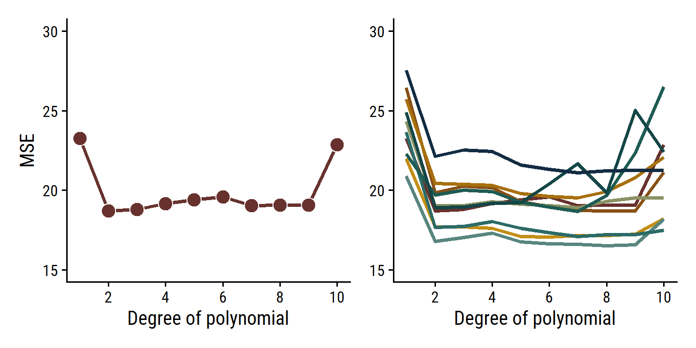
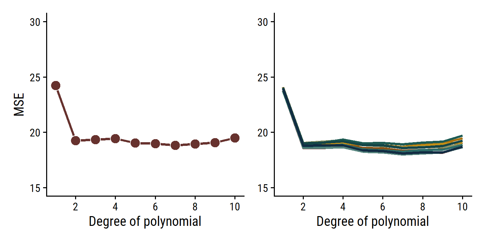
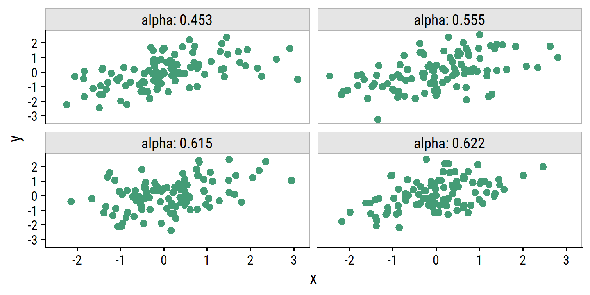
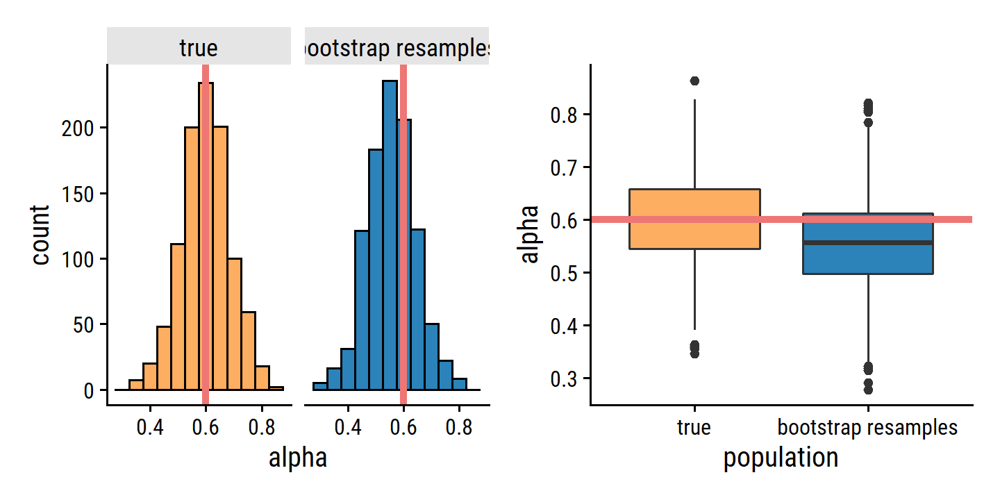
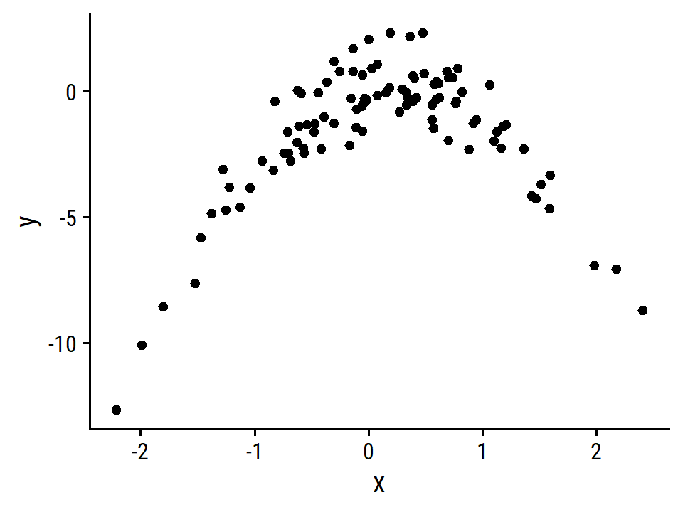

5 Resampling Methods
Resampling methods are an indispensable tool in modern statistics. They involve repeatedly drawing samples from a training set and refitting a model of interest on each sample in order to obtain additional information about the fitted model. For example, in order to estimate the variability of a linear regression fit, we can repeatedly draw different samples from the training data, fit a linear regression to each new sample, and then examine the extent to which the resulting fits differ. Such an approach may allow us to obtain information that would not be available from fitting the model only once using the original training sample.
In this chapter, we discuss two of the most commonly used resampling methods, cross-validation and the bootstrap.
Cross-validation is most often used to estimate test error associated with a statistical learning method, whereas the boostrap is most commonly used to provide a measure of accuracy for a given parameter/method.
The process of evaluating a model’s performance is known as model assessment, whereas the process of selecting the proper level of flexibility for a model is known as model selection.
5.1 Cross Validation
Sometimes we want to estimate the test error rate using the available training data. A number of approaches can be used for this. In this section we consider methods which involve holding out a subset of the training data from the fitting process, then applying the model to that hold-out set for model assessment.
5.1.1 The Validation Set Approach
This simple strategy involves randomly dividing available observations into training and validation sets. The model is fit on the training set, and used to make predictions on the validation set. The corresponding metric from the validation set predictions – usually MSE in the case of a quantitative response – provides an estimate of the test error rate.
To illustrate this, load the Auto data set and R packages:
auto <- ISLR2::Auto
library(tidyverse)
library(tidymodels)
library(broom)
library(gt)
library(patchwork)
library(tictoc)
# Load my R package and set the ggplot theme
library(dunnr)
extrafont::loadfonts(device = "win", quiet = TRUE)
theme_set(theme_td())
set_geom_fonts()
set_palette()Randomly split the data into 50% training and 50% validation, fit on the training set, and compute the MSE on the validation set.
Since I’ll be repeating this 10 times to reproduce the figure, make a couple functions.
First, a function to set a random seed and split the data into training and validation set (called assessment set in the rsample package):
auto_validation_split <- function(seed) {
set.seed(seed)
validation_split(auto, prop = 0.5)
}
auto_splits <- auto_validation_split(seed = 10)
auto_splits## # Validation Set Split (0.5/0.5)
## # A tibble: 1 × 2
## splits id
## <list> <chr>
## 1 <split [196/196]> validationSimilar to the initial_split workflow, I can access the training and validation sets as follows:
training(auto_splits$splits[[1]]) %>% head()## mpg cylinders displacement horsepower weight acceleration year origin
## 139 14.0 8 318 150 4457 13.5 74 1
## 333 29.8 4 89 62 1845 15.3 80 2
## 373 27.0 4 151 90 2735 18.0 82 1
## 73 15.0 8 304 150 3892 12.5 72 1
## 213 16.5 8 350 180 4380 12.1 76 1
## 348 37.0 4 85 65 1975 19.4 81 3
## name
## 139 dodge coronet custom (sw)
## 333 vokswagen rabbit
## 373 pontiac phoenix
## 73 amc matador (sw)
## 213 cadillac seville
## 348 datsun 210 mpgassessment(auto_splits$splits[[1]]) %>% head()## mpg cylinders displacement horsepower weight acceleration year origin
## 1 18 8 307 130 3504 12.0 70 1
## 2 15 8 350 165 3693 11.5 70 1
## 3 18 8 318 150 3436 11.0 70 1
## 5 17 8 302 140 3449 10.5 70 1
## 6 15 8 429 198 4341 10.0 70 1
## 7 14 8 454 220 4354 9.0 70 1
## name
## 1 chevrolet chevelle malibu
## 2 buick skylark 320
## 3 plymouth satellite
## 5 ford torino
## 6 ford galaxie 500
## 7 chevrolet impalaSecond, a function to fit 10 models (1 to 10 polynomial degrees of freedom) on the training set, and evaluate on the validation set with fit_resamples():
1
auto_rec <- recipe(mpg ~ horsepower, data = auto)
lm_workflow <- workflow() %>% add_model(linear_reg())
evaluate_poly_fits <- function(auto_splits) {
tibble(poly_df = 1:10) %>%
mutate(
lm_rec = map(
poly_df, ~ auto_rec %>% step_poly(horsepower, degree = .x)
),
lm_fit = map(
lm_rec,
~ lm_workflow %>% add_recipe(.x) %>% fit_resamples(auto_splits)
),
lm_metrics = map(lm_fit, collect_metrics)
) %>%
unnest(lm_metrics) %>%
filter(.metric == "rmse") %>%
select(poly_df, rmse = mean)
}
auto_poly_fits_validation <- evaluate_poly_fits(auto_splits)
auto_poly_fits_validation## # A tibble: 10 × 2
## poly_df rmse
## <int> <dbl>
## 1 1 5.14
## 2 2 4.46
## 3 3 4.50
## 4 4 4.49
## 5 5 4.39
## 6 6 4.36
## 7 7 4.33
## 8 8 4.33
## 9 9 4.32
## 10 10 4.60Now reproduce Figure 5.2:
auto_poly_fits_validation <- bind_rows(
# 9 additional sets of fits
map_dfr(
1:9,
function(seed) {
auto_splits <- auto_validation_split(seed)
evaluate_poly_fits(auto_splits)
},
.id = "rep"
),
auto_poly_fits_validation %>% mutate(rep = "10")
)
# Use a 10 color palette from the MetBrewer package
pal <- MetBrewer::met.brewer("Veronese", 10, type = "continuous")
p2 <- auto_poly_fits_validation %>%
ggplot(aes(x = poly_df, y = rmse^2, fill = rep)) +
geom_line(aes(color = rep), size = 1) +
expand_limits(y = c(15, 30)) +
scale_x_continuous(breaks = seq(2, 10, 2)) +
scale_color_manual(values = pal) +
scale_fill_manual(values = pal) +
labs(x = "Degree of polynomial", y = NULL) +
theme(legend.position = "none")
p1 <- p2 %+% filter(auto_poly_fits_validation, rep == "1") +
geom_point(aes(fill = rep), shape = 21, color = "white", size = 4) +
labs(y = "MSE")
p1 | p2
As is clear from the right-hand panel, this approach is highly variable depending on the testing/validation set split. Another downside is that, because the training set used to fit the data has fewer observations, it tends to overestimate the test error rate on the entire data set.
5.1.2 Leave-One-Out Cross Validation
Leave-one-out cross validation (LOOCV) attempts to address the shortcomings of the validation set approach. It still involves splitting the \(n\) observations into two parts, but it repeats it \(n\) times, with a single observation \((x_i, y_i)\) as the hold-out “set” and the remaining \(n-1\) observations as the training set. The MSE for each iteration is simply \(\text{MSE}_i = (y_i - \hat{y}_i)^2\). Then the LOOCV estimate of the MSE is the average over all observations:
\[ \text{CV}_{(n)} = \frac{1}{n} \sum_{i=1}^n \text{MSE}_i. \]
The LOOCV approach has a few advantages over the validation set approach:
- First, it has far less bias. In LOOCV, we repeatedly fit the statistical learning method using training sets that contain \(n − 1\) observations, almost as many as are in the entire data set. This is in contrast to the validation set approach, in which the training set is typically around half the size of the original data set. Consequently, the LOOCV approach tends not to overestimate the test error rate as much as the validation set approach does.
- Second, in contrast to the validation approach which will yield different results when applied repeatedly due to randomness in the training/validation set splits, performing LOOCV multiple times will always yield the same results: there is no randomness in the training/validation set splits.
Define a new function to split the data by LOOCV: 2
auto_splits <- loo_cv(auto)
auto_splits## # Leave-one-out cross-validation
## # A tibble: 392 × 2
## splits id
## <list> <chr>
## 1 <split [391/1]> Resample1
## 2 <split [391/1]> Resample2
## 3 <split [391/1]> Resample3
## 4 <split [391/1]> Resample4
## 5 <split [391/1]> Resample5
## 6 <split [391/1]> Resample6
## 7 <split [391/1]> Resample7
## 8 <split [391/1]> Resample8
## 9 <split [391/1]> Resample9
## 10 <split [391/1]> Resample10
## # … with 382 more rows392 splits, which is the number of observations, as expected. Fit:
auto_poly_fits_loo_cv <- evaluate_poly_fits(auto_splits)## Error in `mutate()`:
## ! Problem while computing `lm_fit = map(lm_rec, ~lm_workflow %>%
## add_recipe(.x) %>% fit_resamples(auto_splits))`.
## Caused by error in `check_rset()`:
## ! Leave-one-out cross-validation is not currently supported with tune.As the error says, LOOCV is not supported. Here’s an explanation I found online:
Leave-one-out methods are deficient compared to almost any other method. For anything but pathologically small samples, LOO is computationally excessive and it may not have good statistical properties. Although rsample contains a
loo_cv()function, these objects are not generally integrated into the broader tidymodels frameworks.
Fair enough.
For completeness, I will still get the LOOCV estimates using boot::cv.glm():
auto_poly_fits_loo_cv <- tibble(
poly_df = 1:10,
mse = map_dbl(poly_df,
function(poly_df) {
glm_fit <- glm(mpg ~ poly(horsepower, degree = poly_df), data = auto)
boot::cv.glm(auto, glm_fit)$delta[1]
}
)
)
auto_poly_fits_loo_cv## # A tibble: 10 × 2
## poly_df mse
## <int> <dbl>
## 1 1 24.2
## 2 2 19.2
## 3 3 19.3
## 4 4 19.4
## 5 5 19.0
## 6 6 19.0
## 7 7 18.8
## 8 8 19.0
## 9 9 19.1
## 10 10 19.55.1.3 \(k\)-fold Cross-Validation
\(k\)-fold CV involves randomly dividing the observations into \(k\) groups/folds of approximately equal size. The first fold is used as the validation/assessment set, and the remaining \(k-1\) folds used to fit the model. This is repeated \(k\) times, with each fold being used as the assessment set once. The \(k\)-fold CV estimate of the test error is then the average:
\[ \text{CV}_{(k)} = \frac{1}{k} \sum_{i=1}^k \text{MSE}_i. \]
This should look familiar:
It is not hard to see that LOOCV is a special case of \(k\)-fold CV in which \(k\) is set to equal \(n\). In practice, one typically performs \(k\)-fold CV using \(k\) = 5 or \(k\) = 10. What is the advantage of using \(k\) = 5 or \(k\) = 10 rather than \(k\) = \(n\)? The most obvious advantage is computational. LOOCV requires fitting the statistical learning method \(n\) times. This has the potential to be computationally expensive (except for linear models fit by least squares, in which case formula (5.2) can be used). But cross-validation is a very general approach that can be applied to almost any statistical learning method. Some statistical learning methods have computationally intensive fitting procedures, and so performing LOOCV may pose computational problems, especially if \(n\) is extremely large. In contrast, performing 10-fold CV requires fitting the learning procedure only ten times, which may be much more feasible. As we see in Section 5.1.4, there also can be other non-computational advantages to performing 5-fold or 10-fold CV, which involve the bias-variance trade-off.
Fit the polynomial models with 10-fold CV:
auto_10_fold_cv <- function(seed) {
set.seed(seed)
vfold_cv(auto, v = 10)
}
auto_splits <- auto_10_fold_cv(seed = 10)
auto_splits## # 10-fold cross-validation
## # A tibble: 10 × 2
## splits id
## <list> <chr>
## 1 <split [352/40]> Fold01
## 2 <split [352/40]> Fold02
## 3 <split [353/39]> Fold03
## 4 <split [353/39]> Fold04
## 5 <split [353/39]> Fold05
## 6 <split [353/39]> Fold06
## 7 <split [353/39]> Fold07
## 8 <split [353/39]> Fold08
## 9 <split [353/39]> Fold09
## 10 <split [353/39]> Fold10auto_poly_fits_10_fold_cv <- evaluate_poly_fits(auto_splits)
auto_poly_fits_10_fold_cv## # A tibble: 10 × 2
## poly_df rmse
## <int> <dbl>
## 1 1 4.90
## 2 2 4.35
## 3 3 4.35
## 4 4 4.37
## 5 5 4.31
## 6 6 4.31
## 7 7 4.28
## 8 8 4.29
## 9 9 4.30
## 10 10 4.37Now repeat this another 9 times.
Thought it won’t take too long to run, I’ll make use of parallel to speed it up a bit:
n_cores <- parallel::detectCores(logical = FALSE)
library(doParallel)
cl <- makePSOCKcluster(n_cores - 1)
registerDoParallel(cl)tic()
auto_poly_fits_10_fold_cv <- bind_rows(
# 9 additional sets of fits
map_dfr(
1:9,
function(seed) {
auto_splits <- auto_10_fold_cv(seed)
evaluate_poly_fits(auto_splits)
},
.id = "rep"
),
auto_poly_fits_10_fold_cv %>% mutate(rep = "10")
)
toc()## 93.12 sec elapsedNow reproduce Figure 5.4:
p2 <- auto_poly_fits_10_fold_cv %>%
mutate(mse = rmse^2) %>%
ggplot(aes(x = poly_df, y = mse, fill = rep)) +
geom_line(aes(color = rep), size = 1) +
expand_limits(y = c(15, 30)) +
scale_x_continuous(breaks = seq(2, 10, 2)) +
scale_color_manual(values = pal) +
scale_fill_manual(values = pal) +
labs(x = "Degree of polynomial", y = NULL) +
theme(legend.position = "none")
p1 <- p2 %+% mutate(auto_poly_fits_loo_cv, rep = "1") +
geom_point(aes(fill = rep), shape = 21, color = "white", size = 4) +
labs(y = "MSE")
p1 | p2
The \(k\)-fold CV approach (right panel) still has some variability due to random splitting, but much less than the validation set approach.
As a reminder, with cross-validation we are trying to approximate the true test MSE, which we cannot know for certain unless the data are simulated (like in Figure 5.6). The true error value itself is important if we want to know how a model will perform on independent data. However, if all we care about is parameter(s) that give the minimum error (like the degree of polynomial in these examples), then the CV estimate will usually come close to the true answer.
5.1.4 Bias-Variance Trade-Off for \(k\)-Fold Cross-Validation
In addition to being computationally more efficient than LOOCV, \(k\)-fold CV with \(k < n\) also often gives more accurate estimates of the test error rate due to the bias-variance tradeoff.
- \(k\)-fold CV has moderate bias in comparison to LOOCV, which is approximately unbiased.
- \(k\)-fold CV (average over \(k\) fitted models) tends to have lower variance than LOOCV (average over \(n\) fitted models, highly correlated with each other).
To summarize, there is a bias-variance trade-off associated with the choice of \(k\) in \(k\)-fold cross-validation. Typically, given these considerations, one performs \(k\)-fold cross-validation using \(k\) = 5 or \(k\) = 10, as these values have been shown empirically to yield test error rate estimates that suffer neither from excessively high bias nor from very high variance.
5.1.5 Cross-Validation on Classification Problems
Rather than quantitative \(Y\), cross-validation works just as well with qualitative \(Y\). Instead of MSE, we use the number of misclassified observations, \(\text{Err}_i = I(y_i \neq \hat{y}_i)\). The LOOCV error rate:
\[ \text{CV}_{(n)} = \frac{1}{n} \sum_{i=1}^n \text{Err}_i. \]
The \(k\)-fold CV and validation set error rates are defined analogously.
5.2 The Bootstrap
The bootstrap is a widely applicable and extremely powerful statistical tool that can be used to quantify the uncertainty associated with a given estimator or statistical learning method. As a simple example, the bootstrap can be used to estimate the standard errors of the coefficients from a linear regression fit. In the specific case of linear regression, this is not particularly useful, since we saw in Chapter 3 that standard statistical software such as R outputs such standard errors automatically. However, the power of the bootstrap lies in the fact that it can be easily applied to a wide range of statistical learning methods, including some for which a measure of variability is otherwise difficult to obtain and is not automatically output by statistical software.
The toy example in this section is about investment in two assets \(X\) and \(Y\). We wish to choose a fraction \(\alpha\) of investment into \(X\) which minimizes the total variance (risk) of the investment. In can be shown that the optimal value is given by:
\[ \alpha = \frac{\sigma_Y^2 - \sigma_{XY}}{\sigma_X^2 + \sigma_Y^2 - 2\sigma_{XY}}, \]
where \(\sigma_X^2 = \text{Var}(X)\), \(\sigma_Y^2 = \text{Var}(Y)\), and \(\sigma_{XY} = \text{Cov}(X, Y)\). In reality, we don’t know these variances and covariance, so we estimate them (e.g. \(\hat{\sigma}_X^2\)) using observations of \(X\) and \(Y\) to get an estimated \(\hat{\alpha}\).
To illustrate, we simulate 100 pairs of \(X\) and \(Y\), and compute the estimated \(\alpha\).
The simulation parameters are \(\sigma_X^2 = 1\), \(\sigma_Y^2 = 1.25\), and \(\sigma_{XY} = 0.5\).
Presumably, these are bivariate normally distributed, which I can simulate with the mvtnorm package:
library(mvtnorm)
sigma_x <- 1
sigma_y <- sqrt(1.25)
sigma_xy <- 0.5
# The variance-covariance matrix
sigma <- matrix(c(sigma_x^2, sigma_xy, sigma_xy, sigma_y^2), nrow = 2)
# Generate 5 observations
rmvnorm(n = 5, mean = c(0, 0), sigma = sigma)## [,1] [,2]
## [1,] -0.6198186 0.2723180
## [2,] -0.4510171 -1.4568201
## [3,] -0.0302161 -1.3962636
## [4,] -0.3405990 -0.3004827
## [5,] -0.3552014 1.1948117Write a function to compute \(\alpha\) from the simulated \(X\) and \(Y\):
sim_alpha <- function(xy = NULL) {
if (is.null(xy)) {
xy <- rmvnorm(n = 100, mean = c(0, 0), sigma = sigma)
}
x <- xy[,1]; y <- xy[,2]
(var(y) - cov(x, y)) / (var(x) + var(y) - 2 * cov(x, y))
}
sim_alpha()## [1] 0.577909Run four simulations and plot \(X\) vs \(Y\) for Figure 5.9
set.seed(319)
d4 <- tibble(sim = 1:4) %>%
rowwise() %>%
mutate(xy = list(rmvnorm(n = 100, mean = c(0, 0), sigma = sigma))) %>%
ungroup() %>%
mutate(alpha = map_dbl(xy, sim_alpha) %>% round(3),
x = map(xy, ~ .x[,1]), y = map(xy, ~ .x[,2])) %>%
unnest(cols = c(x, y))
d4 %>%
ggplot(aes(x, y)) +
geom_point(color = td_colors$nice$emerald, size = 2) +
facet_wrap(~alpha, labeller = "label_both") +
add_facet_borders()
For Figure 5.10, I first simulate 1000 data sets from the true population and estimate \(\alpha\) for each:
d <- bind_rows(
d4 %>% distinct(sim, alpha),
tibble(sim = 5:1000) %>%
rowwise() %>%
mutate(alpha = sim_alpha()) %>%
ungroup()
)
d## # A tibble: 1,000 × 2
## sim alpha
## <int> <dbl>
## 1 1 0.555
## 2 2 0.622
## 3 3 0.615
## 4 4 0.453
## 5 5 0.588
## 6 6 0.605
## 7 7 0.483
## 8 8 0.598
## 9 9 0.602
## 10 10 0.633
## # … with 990 more rowsAnd then, using just the first simulated data set, use the rsample::boostraps() function to generate 1000 bootstrap resamples:
d1_boot <- d4 %>% filter(sim == 1) %>% select(x, y) %>%
rsample::bootstraps(times = 1000)
d1_boot## # Bootstrap sampling
## # A tibble: 1,000 × 2
## splits id
## <list> <chr>
## 1 <split [100/34]> Bootstrap0001
## 2 <split [100/37]> Bootstrap0002
## 3 <split [100/32]> Bootstrap0003
## 4 <split [100/35]> Bootstrap0004
## 5 <split [100/39]> Bootstrap0005
## 6 <split [100/38]> Bootstrap0006
## 7 <split [100/43]> Bootstrap0007
## 8 <split [100/39]> Bootstrap0008
## 9 <split [100/31]> Bootstrap0009
## 10 <split [100/44]> Bootstrap0010
## # … with 990 more rowsCompute \(\hat{\alpha}\) from each split:
d1_boot_alpha <- map_dbl(
d1_boot$splits,
function(split) {
xy <- as.data.frame(split)
sim_alpha(as.matrix(xy))
}
)Now reproduce the figure:
d <- bind_rows(
d %>% mutate(population = "true"),
tibble(alpha = d1_boot_alpha, population = "bootstrap resamples")
) %>%
mutate(population = fct_rev(population))
true_alpha <- (sigma_y^2 - sigma_xy) / (sigma_x^2 + sigma_y^2 - 2 * sigma_xy)
p1 <- d %>%
ggplot(aes(x = alpha, fill = population)) +
geom_histogram(binwidth = 0.05, show.legend = FALSE, color = "black") +
geom_vline(xintercept = true_alpha,
color = td_colors$nice$light_coral, size = 1.5) +
facet_wrap(~ population, nrow = 1) +
scale_fill_manual(values = c(td_colors$nice$soft_orange,
td_colors$nice$strong_blue))
p2 <- d %>%
ggplot(aes(y = alpha, x = population)) +
geom_boxplot(aes(fill = population), show.legend = FALSE) +
geom_hline(yintercept = true_alpha,
color = td_colors$nice$light_coral, size = 1.5) +
scale_fill_manual(values = c(td_colors$nice$soft_orange,
td_colors$nice$strong_blue))
p1 | p2
Note that the histogram looks very similar to the left-hand panel, which displays the idealized histogram of the estimates of α obtained by generating 1,000 simulated data sets from the true population. In particular the bootstrap estimate \(\text{SE}(\hat{\alpha})\) from (5.8) is 0.087, very close to the estimate of 0.083 obtained using 1,000 simulated data sets. The right-hand panel displays the information in the center and left panels in a different way, via boxplots of the estimates for \(\alpha\) obtained by generating 1,000 simulated data sets from the true population and using the bootstrap approach. Again, the boxplots have similar spreads, indicating that the bootstrap approach can be used to effectively estimate the variability associated with \(\hat{\alpha}\).
5.3 Lab: Cross-Validation and the Bootstrap
5.3.1 The Validation Set Approach
Here are the MSE values as computed in 5.1.1:
auto_poly_fits_validation %>%
filter(poly_df <= 3, rep == 1) %>%
mutate(mse = rmse^2)## # A tibble: 3 × 4
## rep poly_df rmse mse
## <chr> <int> <dbl> <dbl>
## 1 1 1 4.82 23.3
## 2 1 2 4.33 18.7
## 3 1 3 4.34 18.85.3.2 Leave-One-Out Cross-Validation
Because LOOCV is deterministic (not random), the process in 5.1.2 produces the same MSE values:
auto_poly_fits_loo_cv## # A tibble: 10 × 2
## poly_df mse
## <int> <dbl>
## 1 1 24.2
## 2 2 19.2
## 3 3 19.3
## 4 4 19.4
## 5 5 19.0
## 6 6 19.0
## 7 7 18.8
## 8 8 19.0
## 9 9 19.1
## 10 10 19.55.3.3 \(k\)-fold Cross-Validation
The MSE values as computed in 5.1.3:
auto_poly_fits_10_fold_cv %>%
filter(rep == 1) %>%
mutate(mse = rmse^2)## # A tibble: 10 × 4
## rep poly_df rmse mse
## <chr> <int> <dbl> <dbl>
## 1 1 1 4.87 23.7
## 2 1 2 4.31 18.6
## 3 1 3 4.31 18.6
## 4 1 4 4.32 18.7
## 5 1 5 4.28 18.3
## 6 1 6 4.28 18.3
## 7 1 7 4.24 18.0
## 8 1 8 4.26 18.1
## 9 1 9 4.26 18.2
## 10 1 10 4.32 18.75.3.4 The Bootstrap
Estimating the Accuracy of a Statistic of Interest
portfolio <- ISLR2::Portfolio
glimpse(portfolio)## Rows: 100
## Columns: 2
## $ X <dbl> -0.89525089, -1.56245433, -0.41708988, 1.04435573, -0.31556841, -1.7…
## $ Y <dbl> -0.2349235, -0.8851760, 0.2718880, -0.7341975, 0.8419834, -2.0371910…The tidymodels approach to bootstrap estimates, as in 5.2:
portfolio_boot <- bootstraps(portfolio, times = 1000)
portfolio_boot_alpha <- map_dbl(
portfolio_boot$splits,
function(split) {
xy <- as.data.frame(split)
(var(xy$Y) - cov(xy$X, xy$Y)) /
(var(xy$X) + var(xy$Y) - 2 * cov(xy$X, xy$Y))
}
)
mean(portfolio_boot_alpha); sd(portfolio_boot_alpha)## [1] 0.5784967## [1] 0.08952573Estimating the Accuracy of a Regression Model
The bootstrap approach can be used to assess the variability of the coefficient estimates and predictions from a statistical learning method. Here we use the bootstrap approach in order to assess the variability of the estimates for \(\beta_0\) and \(\beta_1\), the intercept and slope terms for the linear regression model that uses horsepower to predict mpg in the
Autodata set. We will compare the estimates obtained using the bootstrap to those obtained using the formulas for \(\text{SE}(\hat{\beta}_0)\) and \(\text{SE}(\hat{\beta}_1)\) described in Section 3.1.2.
auto_boot <- bootstraps(auto, times = 1000)By default, the tune::fit_resamples() function does not keep the model object from each fit.
Usually, all we care about is the performance metrics and (if we’re tuning) the best hyper parameters.
So in order to get the actual regression coefficients, I need to provide a control_grid() object to the control argument of fit_resamples() (see this article for more explanation):
get_lm_coefs <- function(x) {
x %>% extract_fit_engine() %>% broom::tidy()
}
tidy_ctrl <- control_grid(extract = get_lm_coefs)Now fit the resamples with this with control object:
tic()
auto_boot_fit <- workflow() %>%
add_model(linear_reg()) %>%
add_recipe(recipe(mpg ~ horsepower, data = auto)) %>%
fit_resamples(auto_boot, control = tidy_ctrl)
toc()## 72.1 sec elapsedauto_boot_fit %>% head()## # A tibble: 6 x 5
## splits id .metrics .notes .extracts
## <list> <chr> <list> <list> <list>
## 1 <split [392/152]> Bootstrap0001 <tibble [2 x 4]> <tibble [0 x 1]> <tibble [1 ~
## 2 <split [392/145]> Bootstrap0002 <tibble [2 x 4]> <tibble [0 x 1]> <tibble [1 ~
## 3 <split [392/152]> Bootstrap0003 <tibble [2 x 4]> <tibble [0 x 1]> <tibble [1 ~
## 4 <split [392/154]> Bootstrap0004 <tibble [2 x 4]> <tibble [0 x 1]> <tibble [1 ~
## 5 <split [392/139]> Bootstrap0005 <tibble [2 x 4]> <tibble [0 x 1]> <tibble [1 ~
## 6 <split [392/138]> Bootstrap0006 <tibble [2 x 4]> <tibble [0 x 1]> <tibble [1 ~The .extracts column contains the tidy model objects.
It is a bit clunky to work with – it is a list column with a list of tibbles, so requires tidyr::unnest() twice:
# A single `.extracts` element, which contains a tibble
auto_boot_fit$.extracts[[1]]## # A tibble: 1 × 2
## .extracts .config
## <list> <chr>
## 1 <tibble [2 × 5]> Preprocessor1_Model1# Using `unnest` to get all `.extracts`
auto_boot_fit_coefs <- auto_boot_fit %>%
unnest(.extracts) %>%
unnest(.extracts) %>%
select(id, term, estimate, std.error)
auto_boot_fit_coefs %>% head()## # A tibble: 6 × 4
## id term estimate std.error
## <chr> <chr> <dbl> <dbl>
## 1 Bootstrap0001 (Intercept) 39.4 0.695
## 2 Bootstrap0001 horsepower -0.154 0.00601
## 3 Bootstrap0002 (Intercept) 37.6 0.665
## 4 Bootstrap0002 horsepower -0.139 0.00587
## 5 Bootstrap0003 (Intercept) 39.6 0.688
## 6 Bootstrap0003 horsepower -0.154 0.00620Then taking the mean of the estimates, and applying equation 5.8 to get the standard error:
auto_boot_fit_coefs %>%
group_by(term) %>%
summarise(
mean_estimate = mean(estimate),
se_estimate = sd(estimate),
.groups = "drop"
) %>%
gt() %>%
fmt_number(columns = -term, decimals = 4)| term | mean_estimate | se_estimate |
|---|---|---|
| (Intercept) | 39.9855 | 0.8707 |
| horsepower | −0.1583 | 0.0075 |
Not exactly the same as those in the text due to the difference in the random bootstrap samples. And here are the SE estimates using the formula from section 3.1.2:
tidy(lm(mpg ~ horsepower, data = auto)) %>%
select(term, estimate, se_estimate = std.error) %>%
gt() %>%
fmt_number(columns = -term, decimals = 4)| term | estimate | se_estimate |
|---|---|---|
| (Intercept) | 39.9359 | 0.7175 |
| horsepower | −0.1578 | 0.0064 |
These estimates are similar, but you wouldn’t be considered close.
Does this indicate a problem with the bootstrap? In fact, it suggests the opposite. Recall that the standard formulas given in Equation 3.8 on page 66 rely on certain assumptions. For example, they depend on the unknown parameter \(\sigma^2\), the noise variance. We then estimate \(\sigma^2\) using the RSS. Now although the formulas for the standard errors do not rely on the linear model being correct, the estimate for \(\sigma^2\) does. We see in Figure 3.8 on page 91 that there is a non-linear relationship in the data, and so the residuals from a linear fit will be inflated, and so will \(\hat{\sigma}^2\). Secondly, the standard formulas assume (somewhat unrealistically) that the \(x_i\) are fixed, and all the variability comes from the variation in the errors \(\epsilon_i\). The bootstrap approach does not rely on any of these assumptions, and so it is likely giving a more accurate estimate of the standard errors of \(\hat{\beta}_0\) and \(\hat{\beta}_1\) than is the
summary()function.
We can find better correspondence between bootstrap and regression estimates if we use the quadratic model because it better fits the data:
tic()
auto_boot_quad_fit <- workflow() %>%
add_model(linear_reg()) %>%
add_recipe(
recipe(mpg ~ horsepower, data = auto) %>%
# Need to set `raw` = TRUE to not use orthogonal polynomials
step_poly(horsepower, degree = 2, options = list(raw = TRUE))
) %>%
fit_resamples(auto_boot, control = tidy_ctrl)
toc()## 76.58 sec elapsedauto_boot_quad_fit %>%
unnest(.extracts) %>%
unnest(.extracts) %>%
group_by(term) %>%
summarise(
mean_estimate = mean(estimate),
se_estimate = sd(estimate),
.groups = "drop"
) %>%
gt() %>%
fmt_number(columns = -term, decimals = 4)| term | mean_estimate | se_estimate |
|---|---|---|
| (Intercept) | 56.9755 | 2.1490 |
| horsepower_poly_1 | −0.4673 | 0.0340 |
| horsepower_poly_2 | 0.0012 | 0.0001 |
# Need to set `raw` = TRUE to not use orthogonal polynomials
tidy(lm(mpg ~ poly(horsepower, 2, raw = TRUE), data = auto)) %>%
select(term, estimate, se_estimate = std.error) %>%
gt() %>%
fmt_number(columns = -term, decimals = 4)| term | estimate | se_estimate |
|---|---|---|
| (Intercept) | 56.9001 | 1.8004 |
| poly(horsepower, 2, raw = TRUE)1 | −0.4662 | 0.0311 |
| poly(horsepower, 2, raw = TRUE)2 | 0.0012 | 0.0001 |
5.4 Exercises
Applied
5. Logistic regression with default - validation set
default <- ISLR2::Default- Fit a logistic regression model that uses
incomeandbalanceto predictdefault.
default_workflow <- workflow() %>%
add_model(logistic_reg(mode = "classification", engine = "glm"))
default_rec <- recipe(default ~ income + balance, data = default)
default_fit <- default_workflow %>%
add_recipe(default_rec) %>%
fit(data = default)
extract_fit_parsnip(default_fit)## parsnip model object
##
##
## Call: stats::glm(formula = ..y ~ ., family = stats::binomial, data = data)
##
## Coefficients:
## (Intercept) income balance
## -1.154e+01 2.081e-05 5.647e-03
##
## Degrees of Freedom: 9999 Total (i.e. Null); 9997 Residual
## Null Deviance: 2921
## Residual Deviance: 1579 AIC: 1585- Using the validation set approach, estimate the test error of this model.
Set seed and split:
set.seed(940)
default_splits <- validation_split(default, prop = 0.5)Fit and evaluate the model with the hold out:
default_fit_validation <- default_workflow %>%
add_recipe(default_rec) %>%
fit_resamples(default_splits)
collect_metrics(default_fit_validation)## # A tibble: 2 × 6
## .metric .estimator mean n std_err .config
## <chr> <chr> <dbl> <int> <dbl> <chr>
## 1 accuracy binary 0.973 1 NA Preprocessor1_Model1
## 2 roc_auc binary 0.949 1 NA Preprocessor1_Model1The accuracy of the model is 97.26% and so the test error is 2.74%.
The tidymodels workflow made fitting and assessing this model very easy – just 5 lines of code.
For comparison purposes, here is how you could do it without tidymodels (excluding the data splitting part):
default_train <- training(default_splits$splits[[1]])
default_assess <- assessment(default_splits$splits[[1]])
default_glm <- glm(default ~ income + balance, data = default_train,
family = "binomial")
augment(default_glm, newdata = default_assess, type.predict = "response") %>%
mutate(default_pred = ifelse(.fitted > 0.5, "Yes", "No")) %>%
summarise(error_rate = mean(default != default_pred)) %>%
.$error_rate %>% scales::percent(accuracy = 0.01)## [1] "2.74%"- Repeat the process in (b) three times, using three different splits of the observations. Comment on the results.
set.seed(109)
bind_rows(
collect_metrics(default_fit_validation) %>% mutate(rep = 1),
map_dfr(2:4,
function(rep) {
default_workflow %>%
add_recipe(default_rec) %>%
fit_resamples(validation_split(default, prop = 0.5)) %>%
collect_metrics() %>%
mutate(rep = rep)
}
)
) %>%
filter(.metric == "accuracy") %>%
transmute(
rep,
accuracy = scales::percent(mean, accuracy = 0.01),
test_error = scales::percent(1 - mean, accuracy = 0.01)
) %>%
gt()| rep | accuracy | test_error |
|---|---|---|
| 1 | 97.26% | 2.74% |
| 2 | 97.52% | 2.48% |
| 3 | 97.46% | 2.54% |
| 4 | 97.26% | 2.74% |
The estimates are actually quite stable.
- Add the dummy variable
studentto the logistic regression model. Comment on whether or not this leads to a reduction in the test error rate.
default_rec_student <-
recipe(default ~ income + balance + student, data = default) %>%
step_dummy(student)
default_fit_validation_student <- default_workflow %>%
add_recipe(default_rec_student) %>%
fit_resamples(default_splits)
collect_metrics(default_fit_validation_student)## # A tibble: 2 × 6
## .metric .estimator mean n std_err .config
## <chr> <chr> <dbl> <int> <dbl> <chr>
## 1 accuracy binary 0.972 1 NA Preprocessor1_Model1
## 2 roc_auc binary 0.949 1 NA Preprocessor1_Model1Adding the student variable resulted in a test error rate of
2.78%
and so did not lead to a reduction compared to the original model.
6. Logistic regression with default - standard error estimation
- Determine the estimated standard errors for the coefficients using
summary()andglm().
Here it is in base R:
glm(default ~ income + balance, data = default, family = "binomial") %>%
summary()##
## Call:
## glm(formula = default ~ income + balance, family = "binomial",
## data = default)
##
## Deviance Residuals:
## Min 1Q Median 3Q Max
## -2.4725 -0.1444 -0.0574 -0.0211 3.7245
##
## Coefficients:
## Estimate Std. Error z value Pr(>|z|)
## (Intercept) -1.154e+01 4.348e-01 -26.545 < 2e-16 ***
## income 2.081e-05 4.985e-06 4.174 2.99e-05 ***
## balance 5.647e-03 2.274e-04 24.836 < 2e-16 ***
## ---
## Signif. codes: 0 '***' 0.001 '**' 0.01 '*' 0.05 '.' 0.1 ' ' 1
##
## (Dispersion parameter for binomial family taken to be 1)
##
## Null deviance: 2920.6 on 9999 degrees of freedom
## Residual deviance: 1579.0 on 9997 degrees of freedom
## AIC: 1585
##
## Number of Fisher Scoring iterations: 8In tidymodels, I can use the extract_fit_engine() function to get the same:
logistic_reg() %>%
fit(default ~ income + balance, data = default) %>%
extract_fit_engine() %>%
summary()##
## Call:
## stats::glm(formula = default ~ income + balance, family = stats::binomial,
## data = data)
##
## Deviance Residuals:
## Min 1Q Median 3Q Max
## -2.4725 -0.1444 -0.0574 -0.0211 3.7245
##
## Coefficients:
## Estimate Std. Error z value Pr(>|z|)
## (Intercept) -1.154e+01 4.348e-01 -26.545 < 2e-16 ***
## income 2.081e-05 4.985e-06 4.174 2.99e-05 ***
## balance 5.647e-03 2.274e-04 24.836 < 2e-16 ***
## ---
## Signif. codes: 0 '***' 0.001 '**' 0.01 '*' 0.05 '.' 0.1 ' ' 1
##
## (Dispersion parameter for binomial family taken to be 1)
##
## Null deviance: 2920.6 on 9999 degrees of freedom
## Residual deviance: 1579.0 on 9997 degrees of freedom
## AIC: 1585
##
## Number of Fisher Scoring iterations: 8- Write a function that takes as input the
defaultdata set as well as the index of the observations, and that outputs the coefficient estimates forincomeandbalancein the multiple logistic regression model.
Instead of the workflow I used in 5.2 (with fit_resamples()), I’ll show a different way.
First, a function that takes a split object (a bootstrap sample), fits the model and returns the tidy regression coefficients:
get_tidy_default_fit <- function(split) {
logistic_reg() %>%
fit(default ~ income + balance, data = as.data.frame(split)) %>%
broom::tidy()
}- Get the bootstrap estimates for the standard errors.
Now I use purrr::map() to fit the models using the function from (b):
default_boot <- bootstraps(default, times = 100)tic()
default_fits <- map_dfr(
default_boot$splits, get_tidy_default_fit,
.id = "split"
)
toc()## 291.56 sec elapsedThen estimate the standard errors of the coefficients:
default_fits %>%
group_by(term) %>%
summarise(mean_estimate = mean(estimate), se_estimate = sd(estimate)) %>%
gt() %>%
fmt_number(columns = -term, n_sigfig = 3)| term | mean_estimate | se_estimate |
|---|---|---|
| (Intercept) | −11.6 | 0.443 |
| balance | 0.00566 | 0.000235 |
| income | 0.0000210 | 0.00000492 |
- Comment on the estimated standard errors obtained using the
glm()function and using your bootstrap function.
glm(default ~ income + balance, data = default, family = "binomial") %>%
broom::tidy() %>%
select(term, estimate, se_estimate = std.error) %>%
gt() %>%
fmt_number(columns = -term, n_sigfig = 3)| term | estimate | se_estimate |
|---|---|---|
| (Intercept) | −11.5 | 0.435 |
| income | 0.0000208 | 0.00000499 |
| balance | 0.00565 | 0.000227 |
The estimates are essentially the same between the two methods.
7. LOOCV with weekly
weekly <- ISLR2::Weekly- Fit a logistic regression model that predicts
DirectionusingLag1andLag2.
direction_fit <- logistic_reg() %>%
fit(Direction ~ Lag1 + Lag2, data = weekly)
tidy(direction_fit)## # A tibble: 3 × 5
## term estimate std.error statistic p.value
## <chr> <dbl> <dbl> <dbl> <dbl>
## 1 (Intercept) 0.221 0.0615 3.60 0.000319
## 2 Lag1 -0.0387 0.0262 -1.48 0.140
## 3 Lag2 0.0602 0.0265 2.27 0.0232- Fit the same model using all but the first observation.
A shortcut to getting all but the first row of a data frame is tail(df, -1):
direction_fit_1 <- logistic_reg() %>%
fit(Direction ~ Lag1 + Lag2, data = tail(weekly, -1))
tidy(direction_fit_1)## # A tibble: 3 × 5
## term estimate std.error statistic p.value
## <chr> <dbl> <dbl> <dbl> <dbl>
## 1 (Intercept) 0.223 0.0615 3.63 0.000283
## 2 Lag1 -0.0384 0.0262 -1.47 0.143
## 3 Lag2 0.0608 0.0266 2.29 0.0220- Use the model from (b) to predict the direction of the first observation. Was this observation correctly classified?
augment(direction_fit_1, new_data = head(weekly, 1)) %>%
select(Lag1, Lag2, Direction, .pred_class, .pred_Down, .pred_Up)## # A tibble: 1 × 6
## Lag1 Lag2 Direction .pred_class .pred_Down .pred_Up
## <dbl> <dbl> <fct> <fct> <dbl> <dbl>
## 1 0.816 1.57 Down Up 0.429 0.571It was predicted as “Up”, which is incorrect.
- Write a for loop from \(i = 1\) to \(i = n\), where \(n\) is the number of observations in the data set, that fits a model using all but the \(i\)th observation to prediction
Direction. Then use that fit to predict theDirectionof the held out observation.
Instead of a for loop, I’ll use purrr:
tic()
direction_loocv_preds <-
map_dfr(
1:nrow(weekly),
~logistic_reg() %>%
# Fit with `slice` to exclude the single row (`-.x`)
fit(Direction ~ Lag1 + Lag2, data = slice(weekly, -.x)) %>%
# Predict with `slice` to get just that row (`.x`)
augment(new_data = slice(weekly, .x)) %>%
select(Lag1, Lag2, Direction, starts_with(".pred")),
.id = "i"
)
toc()## 296.35 sec elapsedWhen running long computations in an iterative way (with a for loop or mapping with purrr), it is very easy to take advantage of parallel computing with future and furrr:
library(future)
# Use all but one of my cores
plan(multisession(workers = availableCores() - 1))
tic()
direction_loocv_preds <-
furrr::future_map_dfr(
1:nrow(weekly),
~logistic_reg() %>%
fit(Direction ~ Lag1 + Lag2, data = slice(weekly, -.x)) %>%
augment(new_data = slice(weekly, .x)) %>%
select(Lag1, Lag2, Direction, starts_with(".pred")),
.id = "i"
)
toc()## 23.19 sec elapsed- Take the average of the \(n\) numbers obtained in (d) in order to obtain the LOOCV estimate for the test error. Comment on the results.
I can compute the error, as well as some other metrics, manually like this:
direction_loocv_preds %>%
summarise(
n_correct = sum(Direction == .pred_class),
accuracy = n_correct / n(),
error_rate = 1 - accuracy,
# Defining "Up" as positive, compute sensitivity and specificity
sensitivity = sum(Direction == "Up" & .pred_class == "Up") /
sum(Direction == "Up"),
specificity = sum(Direction == "Down" & .pred_class == "Down") /
sum(Direction == "Down"),
across(c(accuracy, error_rate, sensitivity, specificity), scales::percent)
) %>%
gt()| n_correct | accuracy | error_rate | sensitivity | specificity |
|---|---|---|---|---|
| 599 | 55% | 45% | 93% | 7% |
The yardstick package has a helpful metrics() function for quickly computing various metrics:
metrics(direction_loocv_preds, truth = Direction, estimate = .pred_class)## # A tibble: 2 × 3
## .metric .estimator .estimate
## <chr> <chr> <dbl>
## 1 accuracy binary 0.550
## 2 kap binary 0.00451For classification, this returns by default the accuracy and the Kappa statistic. The latter is a metric that compares the observed accuracy with a random chance classifier. It may be familiar in the context of inter-rater reliability, which is an important aspect of test/scale/measurement validity. Kappa values range from 0 to 1, with high values indicating better agreement. The threshold for an acceptable value will vary by context, but the value here (0.0045) is undoubtedly poor.
I can define a custom metric_set() to get my desired classification metrics for this model:
3
classification_metrics <- metric_set(accuracy, sensitivity, specificity)
classification_metrics(direction_loocv_preds,
truth = Direction, estimate = .pred_class) %>%
pivot_wider(names_from = .metric, values_from = .estimate) %>%
transmute(
error_rate = 1 - accuracy,
across(c(accuracy, error_rate, sensitivity, specificity), scales::percent)
) %>%
gt()| error_rate | accuracy | sensitivity | specificity |
|---|---|---|---|
| 45% | 55% | 7% | 93% |
Note that the labels are switched from my manual calculation: sensitivity is swapped for specificity.
This is because the “positive” level (called the event_level in yardstick) was manually chosen as “Up” by me, but automatically chosen as “Down” by yardstick.
I can switch this by changing the event_level argument in the sensitivity() and specificity() functions:
sensitivity(direction_loocv_preds, truth = Direction, estimate = .pred_class,
event_level = "second")## # A tibble: 1 × 3
## .metric .estimator .estimate
## <chr> <chr> <dbl>
## 1 sensitivity binary 0.934But ideally this is something I would set before fitting the model – by setting “Up” as the first level of the Direction factor, tidymodels will interpret it as the “event” or “positive” level.
8. Cross-validation on simulated data
- Generate a simulated data set. What is \(n\) and \(p\)? Write out the model used to generate the data in equation form.
set.seed(1)
x <- rnorm(100)
y <- x - 2 * x^2 + rnorm(100)The number of observations is \(n\) = 100, and the number of predictors is \(p\) = 1.
\[ \begin{align} Y &= \beta_0 + \beta_1 X + \beta_2 X^2 + \epsilon \\ X &\sim \text{Normal}(0, 1) \\ \epsilon &\sim \text{Normal}(0, 1) \\ \beta_0 &= 0 \\ \beta_1 &= 1 \\ \beta_2 &= -2 \end{align} \]
- Create a scatterplot of \(X\) against \(Y\).
d <- tibble(x, y)
ggplot(d, aes(x, y)) +
geom_point()
This is obviously a very non-linear relationship, with a negative parabola shape. A model without a polynomial term of \(X\) will definitely be a poor fit.
- Set a random seed, and then compute the LOOCV errors that result from fitting the following four models using least squares:
\[ \begin{align} Y &= \beta_0 + \beta_1 X + \epsilon \\ Y &= \beta_0 + \beta_1 X + \beta_2 X^2 + \epsilon \\ Y &= \beta_0 + \beta_1 X + \beta_2 X^2 + \beta_3 X^3 + \epsilon \\ Y &= \beta_0 + \beta_1 X + \beta_2 X^2 + \beta_3 X^3 + \beta_4 X^4 + \epsilon \end{align} \]
set.seed(927)
tic()
sim_fits_c <- crossing(i = 1:nrow(d), poly_df = 1:4) %>%
mutate(
fit = furrr::future_map2(
i, poly_df,
~ linear_reg() %>%
fit(y ~ poly(x, degree = .y), data = slice(d, -.x))
),
resid_i = furrr::future_map2_dbl(
i, fit,
~ augment(.y, new_data = slice(d, .x)) %>% pull(.resid)
)
)
toc()## 18.86 sec elapsedsim_fits_c %>%
group_by(poly_df) %>%
summarise(mse = sum(resid_i^2)) %>%
gt() %>%
fmt_number(mse, decimals = 2)| poly_df | mse |
|---|---|
| 1 | 728.82 |
| 2 | 93.74 |
| 3 | 95.66 |
| 4 | 95.39 |
- Repeat (c) using another random seed. Are your results the same? Why?
set.seed(213)
sim_fits_d <- crossing(i = 1:nrow(d), poly_df = 1:4) %>%
mutate(
fit = furrr::future_map2(
i, poly_df,
~ linear_reg() %>%
fit(y ~ poly(x, degree = .y), data = slice(d, -.x))
),
resid_i = furrr::future_map2_dbl(
i, fit,
~ augment(.y, new_data = slice(d, .x)) %>% pull(.resid)
)
)sim_fits_d %>%
group_by(poly_df) %>%
summarise(mse = sum(resid_i^2)) %>%
gt() %>%
fmt_number(mse, decimals = 2)| poly_df | mse |
|---|---|
| 1 | 728.82 |
| 2 | 93.74 |
| 3 | 95.66 |
| 4 | 95.39 |
Despite setting different random seeds, the results are exactly the same because none of the above code involved the generation of random numbers. LOOCV is an entirely deterministic process – each observation is used a single time as the holdout/evaluation data set.
- Which of the models had the smallest LOOCV error?
The lowest MSE was the second model (\(Y = \beta_0 + \beta_1 X + \beta_2 X^2 + \epsilon\)) which is unsurprising because this is also the model used to generate the data.
- Comment on the statistical significance of the coefficient estimates that result from fitting each of the models in (c) using least squares. Do these results agree with the conclusions drawn based on the cross-validation results?
sim_fits_c %>%
# For this, use the model fits that excluded the first (i = 1) observation
filter(i == 1) %>%
mutate(fit_tidy = map(fit, tidy)) %>%
unnest(fit_tidy) %>%
transmute(
poly_df = paste0("polynomial degree = ", poly_df),
term = factor(term,
labels = c("beta_0", "beta_1", "beta_1",
"beta_2", "beta_3", "beta_4")),
estimate = round(estimate, 2), std.error = round(std.error, 2),
p.value = scales::pvalue(p.value)
) %>%
group_by(poly_df) %>%
gt()| term | estimate | std.error | p.value |
|---|---|---|---|
| polynomial degree = 1 | |||
| beta_0 | -1.55 | 0.26 | <0.001 |
| beta_1 | 6.17 | 2.61 | 0.020 |
| polynomial degree = 2 | |||
| beta_0 | -1.55 | 0.10 | <0.001 |
| beta_1 | 6.17 | 0.96 | <0.001 |
| beta_2 | -23.96 | 0.96 | <0.001 |
| polynomial degree = 3 | |||
| beta_0 | -1.55 | 0.10 | <0.001 |
| beta_1 | 6.17 | 0.97 | <0.001 |
| beta_2 | -23.96 | 0.97 | <0.001 |
| beta_3 | 0.32 | 0.97 | 0.737 |
| polynomial degree = 4 | |||
| beta_0 | -1.55 | 0.10 | <0.001 |
| beta_1 | 6.17 | 0.96 | <0.001 |
| beta_2 | -23.96 | 0.96 | <0.001 |
| beta_3 | 0.32 | 0.96 | 0.736 |
| beta_4 | 1.24 | 0.96 | 0.201 |
This is aligned with the cross-validation results: the model with the 2nd degree polynomial (\(\beta_1\) and \(\beta_2\)) has statistically significant coefficients. The 3rd and 4th degree terms (\(\beta_3\) and \(\beta_4\)) are not significant in either model.
9. Bootstrap with boston
boston <- ISLR2::Boston- Provide an estimate for the population mean of
medv. Call this estimate \(\hat{\mu}\).
mean(boston$medv)## [1] 22.53281- Provide an estimate for the standard error of \(\hat{\mu}\).
sd(boston$medv) / sqrt(nrow(boston))## [1] 0.4088611- Now estimate the standard error of \(\hat{\mu}\) using the bootstrap. How does this compare to your answer from (b)?
set.seed(214)
boston_boot <- bootstraps(boston, times = 1000)
boston_boot_mu <- map_dbl(
boston_boot$splits, ~ mean(as.data.frame(.x)$medv)
)
mean_mu <- mean(boston_boot_mu)
se_mu <- sd(boston_boot_mu)
mean_mu; se_mu## [1] 22.54254## [1] 0.4066961For comparison, here is the implementation with the boot package:
set.seed(214)
medv_mean <- function(data, i) mean(data$medv[i])
boot::boot(boston, statistic = medv_mean, R = 1000)##
## ORDINARY NONPARAMETRIC BOOTSTRAP
##
##
## Call:
## boot::boot(data = boston, statistic = medv_mean, R = 1000)
##
##
## Bootstrap Statistics :
## original bias std. error
## t1* 22.53281 0.009737747 0.4181119The results are slightly different, even with the same seed, because the inner workings of the functions use random numbers in different ways, but both are very close to the estimate from (b).
- Based on your bootstrap estimate from (c), provide a 95 % confidence interval for the mean of
medv. Compare it to the results obtained usingt.test(boston$medv).
Approximate interval using the bootstrap estimates:
mean_mu - 2 * se_mu; mean_mu + 2 * se_mu## [1] 21.72915## [1] 23.35594t.test(boston$medv)##
## One Sample t-test
##
## data: boston$medv
## t = 55.111, df = 505, p-value < 2.2e-16
## alternative hypothesis: true mean is not equal to 0
## 95 percent confidence interval:
## 21.72953 23.33608
## sample estimates:
## mean of x
## 22.53281The 95% confidence intervals are essentially equal.
- Provide an estimate, \(\hat{\mu}_{\text{med}}\), for the median value of
medvin the population.
median(boston$medv)## [1] 21.2- We now would like to estimate the standard error of \(\hat{\mu}_{\text{med}}\). Unfortunately, there is no simple formula for computing the standard error of the median. Instead, estimate the standard error of the median using the bootstrap.
set.seed(25)
boston_boot_median <- map_dbl(
boston_boot$splits, ~ median(as.data.frame(.x)$medv)
)
mean_median <- mean(boston_boot_median)
se_median <- sd(boston_boot_median)
mean_median; se_median## [1] 21.19575## [1] 0.3749333- Provide an estimate, \(\hat{\mu}_{0.1}\), for the tenth percentile of
medv.
quantile(boston$medv, probs = 0.1)## 10%
## 12.75- Use the bootstrap to estimate the standard error of \(\hat{\mu}_{0.1}\).
set.seed(6929)
boston_boot_p10 <- map_dbl(
boston_boot$splits, ~ quantile(as.data.frame(.x)$medv, probs = 0.1)
)
mean_p10 <- mean(boston_boot_p10)
se_p10 <- sd(boston_boot_p10)
mean_p10; se_p10## [1] 12.78025## [1] 0.4978406Reproducibility
Sys.time()## [1] "2022-06-14 10:39:16 AST"if ("git2r" %in% installed.packages()) {
if (git2r::in_repository()) {
git2r::repository()
}
}## Local: main C:/Users/tdunn/Documents/learning/islr-tidy
## Remote: main @ origin (https://github.com/taylordunn/islr-tidy)
## Head: [6bbaf6f] 2022-04-20: Finished chapter 7sessioninfo::session_info()## ─ Session info ───────────────────────────────────────────────────────────────
## setting value
## version R version 4.2.0 (2022-04-22 ucrt)
## os Windows 10 x64
## system x86_64, mingw32
## ui RTerm
## language (EN)
## collate English_Canada.utf8
## ctype English_Canada.utf8
## tz America/Curacao
## date 2022-06-14
##
## ─ Packages ───────────────────────────────────────────────────────────────────
## package * version date lib source
## abind 1.4-5 2016-07-21 [1] CRAN (R 4.1.1)
## assertthat 0.2.1 2019-03-21 [1] CRAN (R 4.1.0)
## backports 1.2.1 2020-12-09 [1] CRAN (R 4.1.0)
## base64enc 0.1-3 2015-07-28 [1] CRAN (R 4.1.0)
## bayestestR 0.12.1 2022-05-02 [1] CRAN (R 4.1.3)
## bit 4.0.4 2020-08-04 [1] CRAN (R 4.1.2)
## bit64 4.0.5 2020-08-30 [1] CRAN (R 4.1.2)
## bookdown 0.24 2021-09-02 [1] CRAN (R 4.1.1)
## boot 1.3-28 2021-05-03 [2] CRAN (R 4.2.0)
## broom * 0.8.0 2022-04-13 [1] CRAN (R 4.1.3)
## bslib 0.3.1 2021-10-06 [1] CRAN (R 4.2.0)
## cachem 1.0.6 2021-08-19 [1] CRAN (R 4.1.1)
## car 3.0-12 2021-11-06 [1] CRAN (R 4.1.2)
## carData 3.0-4 2020-05-22 [1] CRAN (R 4.1.1)
## cellranger 1.1.0 2016-07-27 [1] CRAN (R 4.1.0)
## checkmate 2.0.0 2020-02-06 [1] CRAN (R 4.1.0)
## class 7.3-20 2022-01-16 [2] CRAN (R 4.2.0)
## cli 3.2.0 2022-02-14 [1] CRAN (R 4.1.3)
## coda 0.19-4 2020-09-30 [1] CRAN (R 4.1.0)
## codetools 0.2-18 2020-11-04 [2] CRAN (R 4.2.0)
## colorspace 2.0-3 2022-02-21 [1] CRAN (R 4.1.3)
## combinat 0.0-8 2012-10-29 [1] CRAN (R 4.1.1)
## corrr * 0.4.3 2020-11-24 [1] CRAN (R 4.1.0)
## crayon 1.5.1 2022-03-26 [1] CRAN (R 4.1.3)
## datawizard 0.4.0 2022-03-30 [1] CRAN (R 4.1.3)
## DBI 1.1.2 2021-12-20 [1] CRAN (R 4.1.2)
## dbplyr 2.1.1 2021-04-06 [1] CRAN (R 4.1.0)
## DEoptimR 1.0-9 2021-05-24 [1] CRAN (R 4.1.0)
## dials * 0.1.1 2022-04-06 [1] CRAN (R 4.1.3)
## DiceDesign 1.9 2021-02-13 [1] CRAN (R 4.1.0)
## digest 0.6.29 2021-12-01 [1] CRAN (R 4.1.2)
## discrim * 0.2.0 2022-03-09 [1] CRAN (R 4.2.0)
## distill 1.3 2021-10-13 [1] CRAN (R 4.1.2)
## distributional 0.2.2 2021-02-02 [1] CRAN (R 4.1.2)
## doParallel * 1.0.16 2020-10-16 [1] CRAN (R 4.1.1)
## downlit 0.4.0 2021-10-29 [1] CRAN (R 4.1.1)
## dplyr * 1.0.8 2022-02-08 [1] CRAN (R 4.1.3)
## dunnr * 0.2.5 2022-01-15 [1] Github (taylordunn/dunnr@c83b30e)
## effectsize 0.4.5 2021-05-25 [1] CRAN (R 4.1.0)
## ellipsis 0.3.2 2021-04-29 [1] CRAN (R 4.1.0)
## emmeans 1.7.0 2021-09-29 [1] CRAN (R 4.1.2)
## equatiomatic 0.2.0 2021-01-30 [1] CRAN (R 4.1.0)
## estimability 1.3 2018-02-11 [1] CRAN (R 4.1.1)
## evaluate 0.14 2019-05-28 [1] CRAN (R 4.1.0)
## extrafont 0.17 2014-12-08 [1] CRAN (R 4.1.0)
## extrafontdb 1.0 2012-06-11 [1] CRAN (R 4.1.0)
## fansi 1.0.3 2022-03-24 [1] CRAN (R 4.1.3)
## farver 2.1.0 2021-02-28 [1] CRAN (R 4.1.0)
## fastmap 1.1.0 2021-01-25 [1] CRAN (R 4.1.0)
## forcats * 0.5.1 2021-01-27 [1] CRAN (R 4.1.0)
## foreach * 1.5.2 2022-02-02 [1] CRAN (R 4.1.3)
## fs 1.5.2 2021-12-08 [1] CRAN (R 4.1.2)
## furrr 0.2.3 2021-06-25 [1] CRAN (R 4.1.2)
## future 1.24.0 2022-02-19 [1] CRAN (R 4.1.3)
## future.apply 1.8.1 2021-08-10 [1] CRAN (R 4.1.3)
## generics 0.1.2 2022-01-31 [1] CRAN (R 4.1.3)
## GGally 2.1.2 2021-06-21 [1] CRAN (R 4.1.0)
## ggdist * 3.0.0 2021-07-19 [1] CRAN (R 4.1.2)
## ggplot2 * 3.3.5 2021-06-25 [1] CRAN (R 4.1.0)
## ggrepel 0.9.1 2021-01-15 [1] CRAN (R 4.1.0)
## ggridges 0.5.3 2021-01-08 [1] CRAN (R 4.1.0)
## git2r 0.30.1 2022-03-16 [1] CRAN (R 4.1.3)
## globals 0.14.0 2020-11-22 [1] CRAN (R 4.1.0)
## glue 1.6.2 2022-02-24 [1] CRAN (R 4.1.3)
## gower 0.2.2 2020-06-23 [1] CRAN (R 4.1.0)
## GPfit 1.0-8 2019-02-08 [1] CRAN (R 4.1.0)
## gridExtra 2.3 2017-09-09 [1] CRAN (R 4.1.0)
## gt * 0.5.0 2022-04-21 [1] CRAN (R 4.1.3)
## gtable 0.3.0 2019-03-25 [1] CRAN (R 4.1.0)
## hardhat 0.2.0 2022-01-24 [1] CRAN (R 4.1.3)
## haven 2.4.1 2021-04-23 [1] CRAN (R 4.1.0)
## here * 1.0.1 2020-12-13 [1] CRAN (R 4.1.0)
## highr 0.9 2021-04-16 [1] CRAN (R 4.1.0)
## hms 1.1.1 2021-09-26 [1] CRAN (R 4.1.2)
## htmltools 0.5.2 2021-08-25 [1] CRAN (R 4.1.1)
## httpuv 1.6.5 2022-01-05 [1] CRAN (R 4.1.2)
## httr 1.4.2 2020-07-20 [1] CRAN (R 4.1.0)
## igraph 1.2.11 2022-01-04 [1] CRAN (R 4.1.3)
## infer * 1.0.0 2021-08-13 [1] CRAN (R 4.1.1)
## insight 0.17.0 2022-03-29 [1] CRAN (R 4.1.3)
## ipred 0.9-12 2021-09-15 [1] CRAN (R 4.1.1)
## ISLR2 * 1.3-1 2022-01-10 [1] CRAN (R 4.1.2)
## iterators * 1.0.14 2022-02-05 [1] CRAN (R 4.1.3)
## jquerylib 0.1.4 2021-04-26 [1] CRAN (R 4.1.0)
## jsonlite 1.8.0 2022-02-22 [1] CRAN (R 4.1.3)
## kknn 1.3.1 2016-03-26 [1] CRAN (R 4.1.2)
## klaR 0.6-15 2020-02-19 [1] CRAN (R 4.1.2)
## knitr 1.37 2021-12-16 [1] CRAN (R 4.1.2)
## labeling 0.4.2 2020-10-20 [1] CRAN (R 4.1.0)
## labelled 2.8.0 2021-03-08 [1] CRAN (R 4.1.0)
## later 1.3.0 2021-08-18 [1] CRAN (R 4.1.2)
## lattice 0.20-45 2021-09-22 [2] CRAN (R 4.2.0)
## lava 1.6.10 2021-09-02 [1] CRAN (R 4.1.3)
## lhs 1.1.1 2020-10-05 [1] CRAN (R 4.1.0)
## lifecycle 1.0.1 2021-09-24 [1] CRAN (R 4.1.1)
## listenv 0.8.0 2019-12-05 [1] CRAN (R 4.1.0)
## lubridate 1.8.0 2021-10-07 [1] CRAN (R 4.1.1)
## magrittr 2.0.2 2022-01-26 [1] CRAN (R 4.1.3)
## MASS 7.3-56 2022-03-23 [2] CRAN (R 4.2.0)
## Matrix 1.4-1 2022-03-23 [2] CRAN (R 4.2.0)
## memoise 2.0.1 2021-11-26 [1] CRAN (R 4.1.2)
## MetBrewer 0.1.0 2022-01-05 [1] CRAN (R 4.1.2)
## mgcv 1.8-40 2022-03-29 [1] CRAN (R 4.1.3)
## mime 0.12 2021-09-28 [1] CRAN (R 4.1.1)
## miniUI 0.1.1.1 2018-05-18 [1] CRAN (R 4.1.1)
## modeldata * 0.1.1 2021-07-14 [1] CRAN (R 4.1.0)
## modelr 0.1.8 2020-05-19 [1] CRAN (R 4.1.0)
## munsell 0.5.0 2018-06-12 [1] CRAN (R 4.1.0)
## mvtnorm * 1.1-3 2021-10-08 [1] CRAN (R 4.1.1)
## nlme 3.1-157 2022-03-25 [2] CRAN (R 4.2.0)
## nnet 7.3-17 2022-01-16 [2] CRAN (R 4.2.0)
## parallelly 1.30.0 2021-12-17 [1] CRAN (R 4.1.2)
## parameters 0.14.0 2021-05-29 [1] CRAN (R 4.1.0)
## parsnip * 0.2.1 2022-03-17 [1] CRAN (R 4.1.3)
## patchwork * 1.1.1 2020-12-17 [1] CRAN (R 4.1.0)
## performance 0.9.0 2022-03-30 [1] CRAN (R 4.1.3)
## pillar 1.7.0 2022-02-01 [1] CRAN (R 4.1.2)
## pkgconfig 2.0.3 2019-09-22 [1] CRAN (R 4.1.0)
## plyr 1.8.7 2022-03-24 [1] CRAN (R 4.1.3)
## poissonreg * 0.2.0 2022-03-09 [1] CRAN (R 4.1.3)
## pROC 1.17.0.1 2021-01-13 [1] CRAN (R 4.1.0)
## prodlim 2019.11.13 2019-11-17 [1] CRAN (R 4.1.0)
## promises 1.2.0.1 2021-02-11 [1] CRAN (R 4.1.0)
## purrr * 0.3.4 2020-04-17 [1] CRAN (R 4.1.2)
## qqplotr 0.0.5 2021-04-23 [1] CRAN (R 4.1.0)
## questionr 0.7.5 2021-10-06 [1] CRAN (R 4.1.2)
## R6 2.5.1 2021-08-19 [1] CRAN (R 4.1.1)
## RColorBrewer 1.1-3 2022-04-03 [1] CRAN (R 4.1.3)
## Rcpp 1.0.8.3 2022-03-17 [1] CRAN (R 4.1.3)
## readr * 2.1.1 2021-11-30 [1] CRAN (R 4.1.2)
## readxl 1.3.1 2019-03-13 [1] CRAN (R 4.1.0)
## recipes * 0.2.0 2022-02-18 [1] CRAN (R 4.1.3)
## repr 1.1.3 2021-01-21 [1] CRAN (R 4.1.1)
## reprex 2.0.0 2021-04-02 [1] CRAN (R 4.1.0)
## reshape 0.8.8 2018-10-23 [1] CRAN (R 4.1.0)
## rlang 1.0.2 2022-03-04 [1] CRAN (R 4.1.3)
## rmarkdown 2.11 2021-09-14 [1] CRAN (R 4.1.1)
## robustbase 0.93-8 2021-06-02 [1] CRAN (R 4.1.0)
## rpart 4.1.16 2022-01-24 [2] CRAN (R 4.2.0)
## rprojroot 2.0.2 2020-11-15 [1] CRAN (R 4.1.0)
## rsample * 0.1.1 2021-11-08 [1] CRAN (R 4.1.3)
## rstudioapi 0.13 2020-11-12 [1] CRAN (R 4.1.0)
## Rttf2pt1 1.3.8 2020-01-10 [1] CRAN (R 4.1.1)
## rvest 1.0.0 2021-03-09 [1] CRAN (R 4.1.0)
## sass 0.4.0 2021-05-12 [1] CRAN (R 4.1.0)
## scales * 1.2.0 2022-04-13 [1] CRAN (R 4.1.3)
## see 0.6.4 2021-05-29 [1] CRAN (R 4.1.0)
## sessioninfo 1.1.1 2018-11-05 [1] CRAN (R 4.1.0)
## shiny 1.6.0 2021-01-25 [1] CRAN (R 4.1.0)
## skimr 2.1.3 2021-03-07 [1] CRAN (R 4.1.1)
## stringi 1.7.6 2021-11-29 [1] CRAN (R 4.1.2)
## stringr * 1.4.0 2019-02-10 [1] CRAN (R 4.1.0)
## survival 3.3-1 2022-03-03 [2] CRAN (R 4.2.0)
## tibble * 3.1.6 2021-11-07 [1] CRAN (R 4.1.1)
## tictoc * 1.0.1 2021-04-19 [1] CRAN (R 4.1.1)
## tidymodels * 0.2.0 2022-03-19 [1] CRAN (R 4.1.3)
## tidyr * 1.2.0 2022-02-01 [1] CRAN (R 4.1.3)
## tidyselect 1.1.2 2022-02-21 [1] CRAN (R 4.1.3)
## tidyverse * 1.3.1 2021-04-15 [1] CRAN (R 4.1.3)
## timeDate 3043.102 2018-02-21 [1] CRAN (R 4.1.0)
## tune * 0.2.0 2022-03-19 [1] CRAN (R 4.1.3)
## tzdb 0.2.0 2021-10-27 [1] CRAN (R 4.1.2)
## usethis 2.1.5 2021-12-09 [1] CRAN (R 4.1.2)
## utf8 1.2.2 2021-07-24 [1] CRAN (R 4.1.0)
## vctrs 0.4.1 2022-04-13 [1] CRAN (R 4.1.3)
## vroom 1.5.7 2021-11-30 [1] CRAN (R 4.1.2)
## withr 2.5.0 2022-03-03 [1] CRAN (R 4.1.3)
## workflows * 0.2.6 2022-03-18 [1] CRAN (R 4.1.3)
## workflowsets * 0.2.1 2022-03-15 [1] CRAN (R 4.1.3)
## xfun 0.29 2021-12-14 [1] CRAN (R 4.1.2)
## xml2 1.3.3 2021-11-30 [1] CRAN (R 4.1.2)
## xtable 1.8-4 2019-04-21 [1] CRAN (R 4.1.0)
## yaml 2.2.1 2020-02-01 [1] CRAN (R 4.1.0)
## yardstick * 0.0.9 2021-11-22 [1] CRAN (R 4.1.3)
##
## [1] C:/Users/tdunn/Documents/R/win-library/4.1
## [2] C:/Program Files/R/R-4.2.0/library